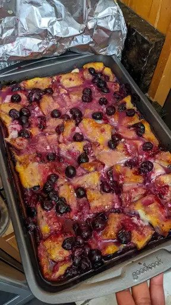

Overnight blueberry french toast recipe

Description
This delicious and fast dessert will whisk away your whole family to a world of decadent french toast and sweet blueberries
Ingredients
- 1 packet of toast
- 3 doses of vanilla extract
- 32 ounces of blueberries